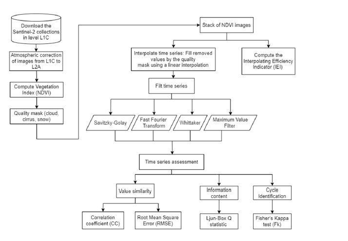
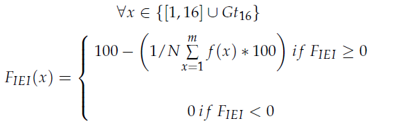
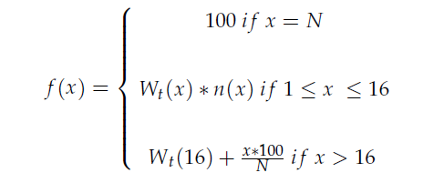

Information content in Sentinel-2 time series using IEI
Description
This work analyses the information content of Sentinel-2 time series with the Interpolating Efficiency Indicator (IEI) and complementary statistics. The research extracts and characterizes spectro-temporal information in multispectral satellite data for geospatial monitoring.

Method — IEI
The Interpolating Efficiency Indicator (IEI) quantifies complexity and information content in multidimensional time series. Applied to Sentinel-2, it can:
- Quantify the information available in each spectral band over time
- Identify temporal variability patterns across the year
- Combine several statistical metrics in one analysis
- Improve the characterization of complex geospatial phenomena


Results and applications
The IEI analysis informs:
- Spectral and temporal patterns in Earth-observation data
- Band selection for specific applications
- Accuracy of classification and forecasting models
- Understanding of land-surface dynamics
References
Paper published in Remote Sensing: